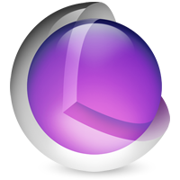

Motion Design for iOSSection 3By Mike Rundle
Natural Motion
The standard animation timing curves are okay to use, but they’re not great, and they certainly won’t result in your interface feeling amazing and delightful for your users, because they still feel slightly robotic and not completely fluid and natural like the motion of a human body or a physical object reacting to outside forces. If we want our animations to feel truly natural, we need to look to the natural world and how real objects behave so we can emulate their movements. This is the secret hallmark of engaging, natural animations in software: making your objects move in accordance with the laws of physics so that the elements of your interface feel like they have heft and momentum as they’re gliding around the screen or beneath your users’ fingertips.
So what does a natural motion look like? What’s an example of something moving in accordance with the laws of physics? Well, it looks something like this.
Hey, a spring with an object at the end! it’s moving like you’d expect an object at the end of a spring to move because you’ve probably seen or experienced spring-like movement many times before. Its movement is quite different from the simple animation easing curves shown previously. Let’s take a look at some animation curves for a mass attached to a spring.
These curves represent the movement of an object attached to a spring, and how various properties (like tension, friction and mass) can affect its motion. If you look at the dark blue line in the image above, that represents a system that is underdamped, meaning that the object will oscillate back and forth (bounce) before finally setting down to its steady state. This is the type of timing curve needed to make an animation feel like the mass on the end of a spring like the example shown above. This underdamped spring motion is what makes an animation feel bouncy and many apps have adopted this type of motion for interface animations. For example, Facebook Paper uses this springy motion throughout the app for nearly all interface motion.
The medium blue curve in the graph above also shows an underdamped system (bounces past the end point before settling down) but it’s a much smoother type of motion with fewer bounces. This leads to a much more subtle feel than an overly-bouncy animation which can make your interface feel too exuberant or enthusiastic.
The red curve depicts a motion that hardly bounces at all and only shoots past the final value by the slimmest of margins before settling down. If the object doesn’t oscillate at all and doesn’t bounce even once, but simply slows down very gradually until it reaches the final value, that spring is considered to be overdamped.
Let’s take a look at some objects with spring-like motions. The red circle is moving as if it’s attached to a very bouncy spring. The green circle will move with fewer, smoother bounces. The blue with no bounces at all, but will reach the final value very, very gradually with an exponential decay animation where the distance left to the final position is decreasing at a rate proportional to its current value.
So the third ball doesn’t actually bounce at all, but its animation is still being governed by the real world physics of a spring, so what gives? Aren’t springs supposed to be bouncy? Like I mentioned previously, the motion of an object attached to a spring is actually determined by the characteristics of the spring. Imagine a slinky and how thin the wire is that comprises its spring. That spring’s tension is extremely loose, and if you attach a small object to the bottom of it, and drop it, you’d see a really springy motion like the red ball is demonstrating. Compare that to a more heavy-duty type of spring with a thicker coil and a much higher tension. The motion of an object attached to that type of spring will be far less bouncy because the properties of the spring are much different.
The animation curve of a spring-like motion and the animation curve of an easing-type motion may look similar (hey, they’re both curves!) but the mathematics behind them are actually very different. As mentioned previously, an easing curve is defined via a cubic Bézier by defining the position of the control points (handles) that shape the curve. Unfortunately, there are many types of more advanced curves and waves that just can’t be described by using a Bézier curve. One of these curves is the motion of a mass-damper spring system.
The type of motion being used to generate nice, springy-feeling animations is typically modeled after a damped harmonic oscillation which can be adjusted with different values for the mass of the weight at the end of the spring, the stiffness of the spring, the damping force, and so on.

The mass is the weight or heft of the object attached to the end of the spring. The stiffness is how difficult it is to stretch out the spring, which typically corresponds to its thickness and how tightly it’s coiled. And the damping is the resistive force or friction, like when you drag your hand through water and feel the forces pushing against it as you try to move quicker through the water. These are the key properties that define a spring’s motion.
If you were to build your own from-scratch animation library for the web, iOS, or any other platform, and wanted it to support spring-like animations, you’d have to understand a lot of the math behind spring systems to implement it properly. Fortunately, for iOS, there are a number of wonderful animation frameworks (built by Apple and others) that already exist that you can use to build natural, spring-like animations.
Before we dive into some animation code, let’s start from the very beginning and discuss the fundamentals of interface development and animation on iOS.
Getting Started with UIKit & Core Animation
At a very basic level, objects on the screen in an iOS app are UIView objects. They are rectangular and have coordinates and dimensions to define their position and size on the screen. UIView is the fundamental interface object in the UIKit Framework used to build your interface. Each of these views might have text, shapes or images drawn within them. For example, the status bar in an iOS app is a long and thin view at the top of the screen and everything in the status bar (the time, battery indicator, signal strength indicator, etc.) are all other views within the status bar view.
There are special types of UIView objects that are purpose-built with certain capabilities or features. Some of those include UIButton for interface buttons, UIImageView to display images, UILabel to display text and UITableView to display tables. You can also have a totally custom UIView that you create from scratch and draw anything you want inside.
Here’s a screenshot of my app Interesting for iPhone and a breakdown of some of the views in the interface.
- The carrier image view (Apple controls this)
- The wifi signal strength view (Apple controls this)
- The current time view (Apple controls this)
- The battery level view (Apple controls this)
- The “hamburger” menu button
- The title label view within the titlebar
- A button to change the subreddit
- A
UITableViewCellview, used to contain elements within one row of aUITableView - The post title in a
UILabel - The comment count
UIButtoncontaining both a comment bubble graphic and the number of comments drawn inside of it - The
UILabeldisplaying the URL for this post - The post’s point value and subreddit within a
UILabel
If you’re not familiar with iOS user interface development, take a look at some of your favorite apps and see if you can identify all the views in the interface as good practice for breaking down your own designs so that you can learn to build them in code.
UIView objects have a number of responsibilities, and one of them is event handling which means responding to touch events. All views in your interface can react to touch events if you want, or you can specify that only certain views should react if a user touches them.
A UIView is essentially a rectangle with graphic contents within it. It’s laid out on the screen, next to and on top of other views, and may have advanced transparency effects that need to be composited together and drawn very quickly. As you might imagine, moving a larger number of views around the screen is quite a challenge, especially on small, low-power devices.
That’s why Apple developed Core Animation.
Core Animation is an animation and graphics compositing framework made for speed and efficiency. Even though it has the word animation in its name, don’t let that fool you into thinking that’s all it does; it’s actually responsible for the entire rendering architecture for displaying all views to the screen, allowing for very fast transparency calculations, image filters and visual effects. It was created for iOS but, starting in OS X 10.5, is also available on the Mac as well.
To manage the contents of graphics being rendered to the screen by the GPU, Core Animation uses CALayer objects as the main workhorse. CALayers are doing the real magic of interface rendering, in fact, UIView objects are actually just thin wrappers around CALayers and Core Animation was initially named Layer Kit within Apple! When you manipulate the placement or dimensions of a UIView on the screen, you’re actually moving its CALayer. Core Animation manages compositing and manipulating your app’s interface content at the hardware level, talking with the graphics card and streamlining the rendering of your interface so it feels snappy and not sluggish. All the animation capabilities built into iOS are enabled by the Core Animation framework.
Layers can be arranged in a hierarchy just like views to create a full user interface on the screen. You don’t actually have to use UIView objects to build your interface, you could just use CALayer objects instead, placing them in the same type of superview-subview hierarchy like views, but instead it’s superlayer-sublayer.
Even though you can execute an app’s interface using only CALayers and not views, most iOS developers build app interfaces with UIView objects and not CALayers directly unless they are doing some serious graphics processing or laying out hundreds or thousands of graphics at once. You can always access a view’s layer at any time in case you need to update any of its properties directly, for example, setting the corner radius of a view is done by manipulating that property on the view’s CALayer.
Simple Animations
It’s time to write some code. Let’s start out by adding a simple UIView object to the screen and setting its corner radius. We’re going to add it to our main window just because it’s a quick example, but you’d want to add this to a view controller that is managing that screen if you were building a real app’s interface.
Note: If you’re just getting started with iOS development and Objective-C, I highly recommend you read my introduction to Obj-C and Cocoa before diving in. Or, you can follow along and pick it up as you go!
UIView *redBall = [[UIView alloc] initWithFrame:CGRectMake(50, 50, 100, 100)]; redBall.backgroundColor = [UIColor redColor]; redBall.layer.cornerRadius = 50; [self.window addSubview:redBall];
We’ve created a new UIView object and set its frame which defines its X and Y coordinates on the screen, and its width and height, then added it to the screen. We’ve also set its backgroundColor property to red. Like I mentioned above, to round the corners of a view you actually need to access its layer, so we set its layer.cornerRadius value to 50 which is half the width of the view. If you add this code in -application:didFinishLaunchingWithOptions in your app’s delegate class, you should see this on the screen after you run it.
Exciting, I know! Now let’s animate it.
iOS provides a few built-in techniques to create animations: creating and adding a CAAnimation to a layer which we’ll discuss a bit later, or, using the simple block-based animation methods to animate the values of a UIView. Let’s create a block-based animation to scale up this circle from 1.0 to 2.0 which will make it twice as large.
UIView *redBall = [[UIView alloc] initWithFrame:CGRectMake(50, 50, 100, 100)];
redBall.backgroundColor = [UIColor redColor];
redBall.layer.cornerRadius = 50;
[self.window addSubview:redBall];
[UIView animateWithDuration:.5 delay:0
options:UIViewAnimationOptionCurveEaseInOut animations:^{
redBall.transform = CGAffineTransformMakeScale(2.0, 2.0);
} completion:NULL];
This code is calling the +animateWithDuration:delay:options:animations:completion: class method on UIView which is one of several animation methods that UIView offers. The first argument, duration, is set to half a second, and the second argument, delay, is set to 0.
The options parameter lets us set what type of animation easing we want to use (it also lets you set a whole bunch of other options like automatically reversing the animation when it’s complete) so for this simple test let’s choose UIViewAnimationOptionCurveEaseInOut which sets the timing as a simple ease-in-out timing curve. Other timing choices are linear, ease-in and ease-out.
Next, the animations argument takes a block of code as its value and within that block you can set the final state of the view you are animating. Core Animation will automatically interpolate the values of the ball’s size in between its current value and your final value to produce a smooth animation. In this case, I want the animation to end up with the ball being twice as large, so I set the transform property on the ball to a new value. The transform is a matrix that expresses how each pixel within the view should be modified using some linear algebra. There are a lot of ways to manipulate a view’s transform (scale, rotation, position), so Apple provides a number of functions to just change the value you’re interested in, and in our case, that’s the scale. Setting the transform property to CGAffineTransformMakeScale(2.0, 2.0) means we want to keep everything else about the transform matrix as it was before, except the size, and we want to scale it up to 2.0x the initial size.
Finally, we don’t want to run any code after this animation has completed so we’ll set the completion argument to NULL. Here’s what the ball will look like now if you run the code again. The GIF will loop back to the beginning but the actual ball will not.
Inside that code block we can change a number of view-related properties and they will all be animated together with the same duration. Now let’s add a few more value changes into our animation block just to the variety of things you can manipulate using a block-based animation.
UIView *redBall = [[UIView alloc] initWithFrame:CGRectMake(50, 50, 100, 100)];
redBall.backgroundColor = [UIColor redColor];
redBall.layer.cornerRadius = 50;
[self.window addSubview:redBall];
[UIView animateWithDuration:.5 delay:0
options:UIViewAnimationOptionCurveEaseInOut animations:^{
redBall.backgroundColor = [UIColor greenColor];
redBall.transform = CGAffineTransformConcat(
CGAffineTransformMakeScale(2.0, 2.0),
CGAffineTransformMakeTranslation(75, 0));
} completion:NULL];
Inside our animation block now, we are doing a few things. First, we’re changing the backgroundColor of the view from the initial color red to green. Core Animation will interpolate that for us and figure out the intermediary colors. Next, we’re changing two things about the view’s transform: its scale and translation. A translation transform just moves the view up, down, left or right. In our case, we’re going to move it 75 pixels to the right. We’re using the CGAffineTransformConcat() function to merge two transform manipulations into one so we can then assign that single matrix transformation to the view. You could manually construct the transformation matrix to include both the scale and translate changes in one data structure but I find it’s easier to just let iOS do it for us by combining multiple, individual transforms into one final transform.
Making sense so far? The math around matrix transformations is a little complex and tough to grok but Apple makes it pretty approachable even if you don’t have a linear algebra background. Animating a view’s transform matrix is one of the most powerful ways to power an animation.
Getting Started With Spring Animations in iOS 7
Starting in iOS 7, Apple added spring-like animation capabilities to its existing suite of animation methods. Actually, they added a lot more than that; their UIKit Dynamics framework is a full physics engine integrated into UIKit allowing you to add gravity, attached springs, forces and more to your interface elements.
Let’s take a look at an updated block-based animation method introduced in iOS 7 that now takes in some additional parameters to enable spring-like animations. Here’s an update to our animation code.
UIView *redBall = [[UIView alloc] initWithFrame:CGRectMake(50, 50, 100, 100)];
redBall.backgroundColor = [UIColor redColor];
redBall.layer.cornerRadius = 50;
[self.window addSubview:redBall];
[UIView animateWithDuration:3 delay:0 usingSpringWithDamping:.3
initialSpringVelocity:0 options:0 animations:^{
redBall.transform = CGAffineTransformMakeTranslation(300, 0);
} completion:NULL];
Wow, that’s a long method! As you can see, there are some additional parameters present in this method call that weren’t in our previous examples. Those parameters include spring damping and initial spring velocity. Spring damping is a value between 0 and 1 where 1 simulates an overdamped spring system with no oscillation, and 0 represents an underdamped system with tons of bounciness. The velocity parameter is used to define how fast the object should start off, and is useful for when you’re working with gestures and continuing the momentum of an object after a user has lifted their finger off the screen.
In our example we set the damping to .3 (fairly springy) and the velocity to 0 as we’re starting the object from a stand-still. The duration has also been increased as the bounciness will take longer to come to a rest.
Personally, I don’t think spring animations using the new block-based methods in iOS 7 move as smoothly and organically as I’d like them to, nor do they provide enough spring properties to fiddle with when you really want to refine the motion. Also, if you’re building a Mac app and would like to use some of these springy motions from UIKit Dynamics there you’re out of luck. What about if your app still needs to support versions of iOS before 7? You’re out of luck there as well since UIKit Dynamics wasn’t introduced until iOS 7 and can’t be used in older iOS versions.
So how else can we build natural motion, spring-like animations? What are our other options? Fortunately, I think there are two excellent alternatives to UIKit Dynamics that solve all the issues I’ve listed above related to tweakable properties and working on iOS 6 and Mac OS X with little-to-no modifications of the code. I’m a huge fan of the following two frameworks and have used them extensively on apps I’ve shipped and future apps I’m still working on.
Those two frameworks are JNWSpringAnimation and Pop by Facebook.
JNWSpringAnimation
JNWSpringAnimation is a wonderful animation framework written by Jonathan Willing, a Mac and iOS developer. To understand why it’s great, let’s first back up and talk about Core Animation one more time.
As I mentioned before, Core Animation’s timing is defined by cubic Bézier curves. You can tell an animation to use linear, ease-in, ease-in-out or ease-out timing, or you can manually set the curve’s control points just like you can in CSS animations by using the cubic-bezier animation-timing-function.
However, you can’t define spring motion animation curves this way because their shapes are too advanced. So what can you do? How else can we create a motion like this?
Instead of a set-it-and-forget-it implicit animation like the kind we’ve been talking about (where you define starting and ending values and let Core Animation figure out the interpolated middle values for you), Apple also gives developers a special type of animation called a CAKeyframeAnimation.
A keyframe animation is one where you give the system a list of values (which could be used for changing an object’s position, rotation, scale, etc.) and it’ll step-through each value in your list at time intervals that you define. You can use keyframe animations to create multi-part animations where something moves towards one position for the first few seconds, then pivots and moves in another direction. You can also change the easing for each segment of the animation.
The way that JNWSpringAnimation works is you define the key properties of your spring like the damping, stiffness and the mass, then tell it what property you’re going to animate, and then JNWSpringAnimation will create a CAKeyframeAnimation for you with lots of values for your animation, one for every 1/60th of a second following the spring's motion curve until it reaches its final value. Then, all you need to do is attach this keyframe animation to the CALayer you want to be animated (which could be a layer by itself, or the layer property on a UIView), and Core Animation will step through each keyframe one by one by one, 60 times per second, until it lands on the final position and the animation is completed. The system doesn’t need to know how you generated all the values in the big keyframe list, or what kind of motion it’ll produce, it just blindly changes whatever property you wanted to animate at each step of the way to the value you want.
At a more detailed level, JNWSpringAnimation takes the values you give it for describing the spring you want to emulate in your motion and graphs the actual spring curve, in code. Then, to generate all the keyframe values for the animation, it essentially walks the curve a tiny, tiny step at a time to determine what the value is on the curve every 1/60th of a second. That’s the value it inserts into the CAKeyframeAnimation for that exact moment in time for the object to move to. It’s very fast to complete this process as it all happens before the animation even begins.
Let’s walk through a few examples of using JNWSpringAnimation to animate different properties with different types of spring-enabled motion. For our first example, we’re going to animate the same red ball as before by scaling its size from 1 up to 2.0 with a bounce effect governed by a spring that we’ll define.
JNWSpringAnimation *scale =
[JNWSpringAnimation animationWithKeyPath:@"transform.scale"];
To start, we defined our JNWSpringAnimation object, a new instance of an animation, and named it scale. We used the designated initializer and passed in a key path of “transform.scale”, but what does that really mean? The key path is simply the property or value which we want to be animated. It’s a property of the view’s underlying CALayer object, which is the thing we’re actually going to be animating here since we’re using a keyframe animation. Remember how CALayer is the real Core Animation workhorse? That’s because when using animations like keyframe animations, you attach them to the layer you want animated, and typically that layer is part of a corresponding UIView object. Want to animate a UIImageView that’s showing a photo? Animate its layer. Want to animate a UIButton? Animate its layer.
At this point we have a JNWSpringAnimation object that knows exactly what property it will be acting on, but that’s about it. Time to tweak the motion of this animation by adjusting some spring properties.
JNWSpringAnimation *scale =
[JNWSpringAnimation animationWithKeyPath:@"transform.scale"];
scale.damping = 9;
scale.stiffness = 100;
scale.mass = 2;
Damping, stiffness and mass are the three important spring properties that we’ll be adjusting to get the perfect motion for our ball animation. How did I arrive at these values? Easy! JNWSpringAnimation also includes a Mac app that lets you interactively play with these three values and see the result instantly.
It’s also important to note that you don’t set a duration on a JNWSpringAnimation like you do on the block-based UIView animations shown previously. Those three properties of damping, stiffness and mass will produce a spring motion that will settle down at the final value once the mechanics of the system arrive at the final value. If you want the duration of your animation to be shorter, then you can tweak the properties of the spring so that it reaches the final value quicker, typically by increasing the damping property of the spring. By not artificially manipulating the overall duration of the spring motion, you’re letting the object you’re animating move as if it would in the natural world with actual spring forces governing its complete motion and duration of motion. This is what makes animations built with JNWSpringAnimation feel so natural and look so interesting.
Since we’re just animating a red ball as an example, the motion of the spring isn’t critical, but when we start animating actual interface elements in the next section the motion that we define has everything to do with the feel of the animation and what we’re trying to accomplish with it. That’s why an interactive spring-defining app like the one JNWSpringAnimation provides is so important as it saves loads of time when you build your actual animations.
Once you arrive at the perfect motion for your animation, you just plug in the damping, stiffness and mass values into your animation code and whatever you’re animating will have the same motion as the sample app you were just using to arrive at the right values.
We also have to let the JNWSpringAnimation object know what the starting and finishing values are of the property we want to animate. These are used to actually graph the spring and generate the keyframe values.
JNWSpringAnimation *scale =
[JNWSpringAnimation animationWithKeyPath:@"transform.scale"];
scale.damping = 9;
scale.stiffness = 100;
scale.mass = 2;
scale.fromValue = @(1.0);
scale.toValue = @(2.0);
Now that our JNWSpringAnimation object knows its start and finish values, and the exact properties of the spring that we want to emulate, we can now let it rip by adding the animation to the CALayer that we want to move. In our case, we’re going to add it to the redBall that we’ve been working with.
JNWSpringAnimation *scale =
[JNWSpringAnimation animationWithKeyPath:@"transform.scale"];
scale.damping = 9;
scale.stiffness = 100;
scale.mass = 2;
scale.fromValue = @(1.0);
scale.toValue = @(2.0);
[redBall.layer addAnimation:scale forKey:scale.keyPath];
The animation named scale has now been added to redBall.layer for the given key path (aka the value we want to change on the layer). We could pass in "transform.scale" into the forKey: argument but we might as well just pass in the exact key path on the animation we created so we don’t have any mix-ups since the key path on the JNWSpringAnimation and the key path when we add the animation have to match up. In this case, the key path of "transform.scale" that we initialized our animation with can just be accessed using scale.keyPath.
If we build and run our code, here’s what this produces.
The ball animates from its default size up to a scale of 2.0 (twice the size) but then immediately jumps back down to its original size. That’s actually the exact, correct behavior for the code we wrote up above, but the reason why the ball jumps back to its original size after the animation has completed is important to understand.
Core Animation maintains three sets or trees of your layers at any given time. Each layer tree plays an important role in how your interface appears on screen.
- Model layer tree. The model layer tree reflects all the properties of a layer while it’s static and not being animated. For example, when we set
redBall.layer.cornerRadiusto50to make the round ball, we were setting a property on the model layer. The values in the model layer are the ones your app will interact with the most. Whenever you change the property of a layer, you are updating its model layer. The values in the model layer do not change during an animation and will still be reflective of the previous value before you added the animation. - Presentation layer tree. The presentation layer tree reflects the properties of layers while they’re being animated and contains the in-flight values for any running animations. You shouldn’t actually set any values in this layer tree, instead, you typically interact with the presentation layer tree by reading the current animation values if you want to understand exactly where a layer is or how it’s behaving during an animation.
- Render tree. The render tree is Apple’s private set of values that it uses to perform actual graphics rendering to the screen. You’ll never need to interact with or know about these values.
When we added an animation to the layer, the animation was manipulating values in the layer’s presentation tree and then when the animation was complete, the animation was removed from the layer automatically and the presentation tree’s value snapped back to the model’s values since those are values that reflect the true, static properties of a layer.
If we want the layer’s properties to be updated to the final value of the animation, we actually need to explicitly say so. Yeah, I know this is odd, but because Core Animation enables developers to build so many different types of animations, they needed to support the use case where sometimes you actually want your animation to be removed and the layer to snap back to its original position.
Here’s the updated code example with 1 crucial line added at the end.
JNWSpringAnimation *scale =
[JNWSpringAnimation animationWithKeyPath:@"transform.scale"];
scale.damping = 9;
scale.stiffness = 100;
scale.mass = 2;
scale.fromValue = @(1.0);
scale.toValue = @(2.0);
[redBall.layer addAnimation:scale forKey:scale.keyPath];
redBall.transform = CGAffineTransformMakeScale(2.0, 2.0);
By manually setting the transform property on the redBall to have a 2.0 scale, and matching the final value of the animation, the animation will be removed and the actual transform value on the layer will be updated seamlessly to match the animation’s final value. The ball will remain at the 2.0 scale now. The GIF will still loop back to the starting position but in the code the ball will not.
You might be thinking, hmm, when we used the block-based UIView animation methods we didn’t have to bother with this and you’d be totally right. The block-based animation methods on UIView are a more convenient way to create simple animations as they will automatically persist the final value without having to actually set it. Of course, the downside is that you are stuck with the default easing motions or the overly-simplistic spring motions that iOS 7 provides. If you want full control over your animation and want to meticulously tweak the properties of your spring, then you’re going to have to jump up to the big leagues with real CAAnimation objects, of which JNWSpringAnimation is one.
The real allure of using a spring animation framework like JNWSpringAnimation is that you get precise control over the mechanics of your spring, so let’s take a look at some more examples with the red ball, but using all different spring motions.
JNWSpringAnimation *scale =
[JNWSpringAnimation animationWithKeyPath:@"transform.scale"];
scale.damping = 13;
scale.stiffness = 540;
scale.mass = 11;
scale.fromValue = @(1.0);
scale.toValue = @(2);
[redBall.layer addAnimation:scale forKey:scale.keyPath];
redBall.transform = CGAffineTransformMakeScale(2.0, 2.0);
These spring properties produce a much slower, deeper movement.
The next example doesn’t bounce at all but has an exponential decay motion to slowly arrive at the final value. This is emulating a spring system that is overdamped. The motion is similar to a simple ease-out motion but arrives at the final value much more gradually. We can also fine-tune the speed at which it arrives at the final value by manipulating the damping and stiffness properties together.
// All the other parts of the code are the same scale.damping = 6; scale.stiffness = 6; scale.mass = 1;
Here are 3 balls side-by-side. The first has a damping of 6, a stiffness of 6 and a mass of 1. The second has a damping of 15, a stiffness of 15, and a mass of 1. The third has a damping of 30, a stiffness of 30, and a mass of 1. They all have an exponential decay type of motion, but they arrive at their final values in different speeds.
And just because I’ve mostly been showing scale transform animations doesn’t mean you can’t animate more properties of layers! Here’s how you can use JNWSpringAnimation to rotate a layer using a spring motion.
JNWSpringAnimation *scale =
[JNWSpringAnimation animationWithKeyPath:@"transform.rotation"];
scale.damping = 10;
scale.stiffness = 100;
scale.mass = 3;
scale.fromValue = @(0);
scale.toValue = @(M_PI_2);
[redBall.layer addAnimation:scale forKey:scale.keyPath];
redBall.transform = CGAffineTransformMakeRotation(M_PI_2);
Since this is a rotation animation, the starting and final values will be angles defined in radians. To set the final value on the model layer we’re using the convenient function CGAffineTransformMakeRotation() to set it to 2π.
Next we’ll be setting the damping and stiffness of our spring to the same value which will result in an exponential decay type of motion like in the 3 layer example shown previously. Instead of animating the scale of a layer, we’ll be animating its position.
JNWSpringAnimation *scale = [JNWSpringAnimation
animationWithKeyPath:@"transform.translation.x"];
scale.damping = 7;
scale.stiffness = 7;
scale.mass = 1;
scale.fromValue = @(0);
scale.toValue = @(400);
[redBall.layer addAnimation:scale forKey:scale.keyPath];
redBall.transform = CGAffineTransformMakeTranslation(400, 0);
The position key path we’ll be animating is "transform.translation.x" which is the left-to-right position — the x axis. We’ll be moving it 400 pixels to the right, so the toValue is 400. To set the final position and keep the ball where we animated it, we have to set the ball’s transform to CGAffineTransformMakeTranslation(400, 0). This function is an easy way to change the translation components of the view’s transformation matrix and takes in two parameters, the x and y translation.
Of course, we can animate multiple properties at once. Here’s a look at some code that will scale and rotate a view at the same time. See if you can spot the differences from just animating a single property.
JNWSpringAnimation *scale = [JNWSpringAnimation
animationWithKeyPath:@"transform.scale"];
scale.damping = 9;
scale.stiffness = 9;
scale.mass = 1;
scale.fromValue = @(1);
scale.toValue = @(4.0);
[redBall.layer addAnimation:scale forKey:scale.keyPath];
redBall.transform = CGAffineTransformScale(redBall.transform, 4.0, 4.0);
JNWSpringAnimation *rotate = [JNWSpringAnimation
animationWithKeyPath:@"transform.rotation"];
rotate.damping = 9;
rotate.stiffness = 9;
rotate.mass = 1;
rotate.fromValue = @(0);
rotate.toValue = @(M_PI);
[redBall.layer addAnimation:rotate forKey:rotate.keyPath];
redBall.transform = CGAffineTransformRotate(redBall.transform, M_PI);
The first animation is a scale transform, from 1.0 to 4.0 which will make it 4× as large. The first difference in this code compared with previous examples is when we set the model layer’s actual transform value after we add the animation (so it keeps the final value.) Instead of using the CGAffineTransformMakeScale() function and passing in the new scale, we’re using the extremely-similarly-named-and-easy-to-confuse CGAffineTransformScale() function which takes in 3 parameters. CGAffineTransformMakeScale() (with the word “make” in it) assumes that the change to the transform matrix you want to make is from the identity transform which is the normal, default, untouched matrix transform that freshly created views have.
On the other hand CGAffineTransformScale() takes in 3 parameters where the first parameter is a starting transform matrix you want to apply your changes to. This could be the identity transform or a transform that already has some manipulations baked into it, like if it’s already been rotated, scaled, translated, etc. The reason we are using this function and passing in the view’s current transform as the first parameter is that we are adding two animations to it and they are both manipulating the layer’s transform matrix. If we just used CGAffineTransformMakeScale(), we will trample all over the 2nd animation’s transform adjustment since we’d be starting out with the identity transform, not the recently-updated layer transform that the 2nd animation set. By passing in the current transform value, we’ll make sure to use the very latest value of it for our manipulation, which might include the 2nd animation’s final value.
The second animation will rotate our object π radians. Let’s take a look at what this animation looks like with both a scale and rotation transform.
Cool, huh? We don’t need to have the same animation timings either; since these are 2 separate animation objects, we can control each spring’s properties independent of the other one. Here’s a scale and rotation animation example with the scale spring using an exponential decay type of spring motion (no bouncing) and the rotation animation motion being very springy.
Here’s another example of 2 animations being added at the same time. This time it’s a combination of a position (translation) animation coupled with a scale transform.
I don’t know about you, but I’m getting a little bored of just animating these colored shapes. I think it’s time to get into some real-world, real app examples of how to use spring motion animations using JNWSpringAnimation.
CONTINUE